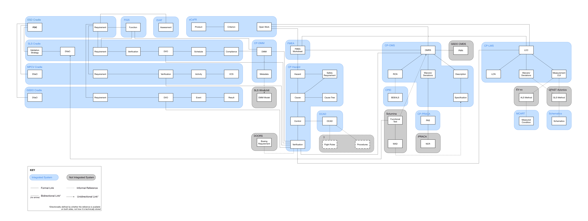

Project Origin
As a UX researcher and designer in the NASA HCI group, I build web-based systems to house data for human space exploration. Each type of information has its own database with its own separate UI.
Engineers use our sites to record safety analyses of how every part on board the international space station could break and how to fix it, the requirements for the weather on launch day, and more. All of this data is related, yet it is all siloed.
{kind=link}
Parts, test results, and launch criteria are all related data yet they are siloed into separate databases with their own UIs.
Just like the components of a rocket need to connect perfectly to ensure mission success, so must its data. We suspected that even though the data existed, users couldn't fully leverage it because of the fragmented experience of accessing it through multiple UIs. I initiated and led a user research effort to understand this problem better.
The Question
I set out to answer the following user research question:
How do users interact with related data and how can their experience be improved?
Methods
Contextual Inquiry
A major challenge in this effort was the variety of users, data, and experiences it encompassed, all within a dense domain - rocket science to be exact. Rather than every designer getting a degree in aerospace engineering, the design team splits up the responsibility for understanding this domain.
I ran contextual inqueries with the users in my subdomain while they used our current search functionality. Overall, I spoke with 9 users.
I want to be able to better choose what goes into export... Flexibility with simplicity. I don’t want complexity.
A contextual inquiry partipant describes the overly complex experience of building a search and customizing a csv export of that search.
Each of our 10 person design team collected further insights from users within their subdomains. But much like our users' data was siloed, so were our team's research findings. I consolidated the large set of disparate user research insights across our design team and created generalized models from which we extracted new findings and design ideas.
Data Model
My question centered on users' interactions with data connections, e.g. a safety engineer's analysis of the temperature limitations of the rocket connects to a requirement for the weather conditions to keep it operational on launch day. So the first thing we did was model those connections.
Our findings on 'hubs' and 'gaps' in the data eventually helped us determine what use cases to focus on in our designs.
{kind=link}
The fully consolidated data model shows all data types and their relationships across our systems. Real data and system names have been redacted.
Click to zoom.
{kind=link}
The Verification data type (right) has connections going out to many other data types, making it a 'hub'. By contrast, the Boeing Requirement (left) has no formal links, showing us a 'gap'.
Main Findings:
- Hubs - whole databases or specific data types that connect to almost all others.
- Gaps - places where the data is not well connected or the flow of data never connects back to its originator.
Affinity
A major goal of this project was to extract common needs across our entire suite of data tools. We turned to an affinity diagram to help synthesize the low-level findings from research across several subdomains into high level findings that generalized to all of our users.
{kind=link}
We used an affinity diagram to extract high level insights.
Our findings from this project consisted largely of the various tasks that were common among our different users. These findings helped us to create a generalized workflow described in the next section.
Main Findings:
- Gather - users gather data from across multiple sources by searching and filtering our data on our sites
- Organize - linking and tagging functionality is used to make adhoc lists of various data types
- Track - users regularly check in on the status of the data that they care about
- Analyze - tracked data is used to create metrics to help analyze progress over time or find anomalies
- Report - users report out their analyses at set mission milestones
Workflow
By consolidating previous research done across our team, we were able to abstract the unique workflows of individual user groups to a general understanding of how users interact with related data.
{kind=link}
The generalized workflow shows the tasks users complete using related data and how those tasks flow from one to the next.
The workflow helped us identify the majority of the breakdowns in the process, telling us where to look for the second half of our research question: How can the user experience be improved?
Main Workflow Breadowns:
- There is no way to be directly notified of updates to data linked to yours. Users rely on word of mouth which can lead to missing important information.
- Our team has spent months of development time creating one time reports that stitch together data from across multiple sources. We are essentially delivering extremely slow search results.
- There is no real-time track lists of data across systems which leads to out-of-date reporting.
User Stories
Finally, we collected users stories from across the different user groups and consolidated them into epics that applied to our full user set. This step was crucial for connecting our research to our design phase.
These epics captured why our users needed to do a certain task, which gave us the freedom to design outside of existing tools, while grounding design decisions in research-backed evidence. Below is a sampling of the 8 user story epics derived from my research.
- Epic 1
As a stakeholder of a data item, I want to be notified of status updates to data linked to my item so that I can reassess risk.- Epic 2
As the data gatherer, I want to search through cross-system data in order to determine if it is important to track.- Epic 3
As the data gatherer, I want to identify important items so I can refer back to them at a later date.- Epic 4
As a data analyst, I want to view data linked to mine so I can complete my analysis.
Design
Scoping
Our first step in deciding the design direction was to focus in on the epics in which there were the biggest opportunities for improvement.
We visualized the severity of breakdowns within an epic against the prevalence of that issue in the matrix below. We chose the 3 epics that were closest to the top right corner, since these were the most broudly applicable tasks in the most need of improvement. These are Epics 1 - 3 listed in the previous section.
{kind=link}
We prioritized design work on the epics with the highest severity of breakdowns and prevalence among users. Epics 1 - 3 are detailed in the previous section.
Exploration
We explored design ideas to improve the experience in the three most prevalent epics with the most severe breakdowns.
{kind=link}
We explored ways to display data relationships within search results across multiple databases.
{kind=link}
We explored ways to for users to create custom lists of data to help with the Organize and Track stages of their workflow.
{kind=link}
We explored ways to help users searching within structured datasets by suggesting search criteria that may be relevant to them.
Design Direction
The primary design idea that came out of our early exploration was to create a data integration layer for our existing suite of tools. This is essentially a home for all data sets that allows users to find, track, and analyze the relationships. Our design direction provides a cohesive experience for interacting with data across all our products.
Primary Design Direction: Data Integration Home
Based on evidence from our extensive research, create a platform for exploring disparate datasets and their relationships, unifying the experience across all of our other products.
Design work beyond the exploration phase is currently underway. The major features of the Data Integration Home directly address the breakdowns within the top 3 epics we learned about from research. These features enable users search across separate databases all in one place, watch particular lists of items, and set notifications for when important data changes.
Core features of Data integration Home
- Cross-system Notifications - an email service that notifies users when data related to theirs has changed
- Cross-system Search - a search functionality that looks across like attributes of different data and provides navigation through data relationships
- Customizable Lists - user-curated lists of data taken from any dataset in our tool suite that can be watched for changes
Impact
The insights from my research changed the way that our team was looking at our suite of tools, from individual fragmented experiences to one cohesive platform. This will enable users to leverage related data in ways that were not possible before, save time, and improve the accuracy of reporting.
The implementation of my design suggestions is one of the top goals for our team for 2018. The full design and implementation are currently underway.